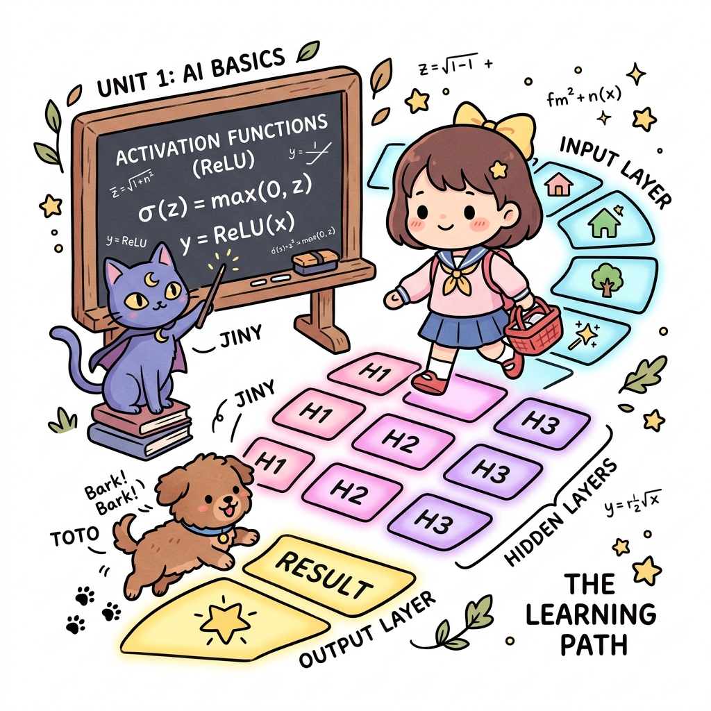
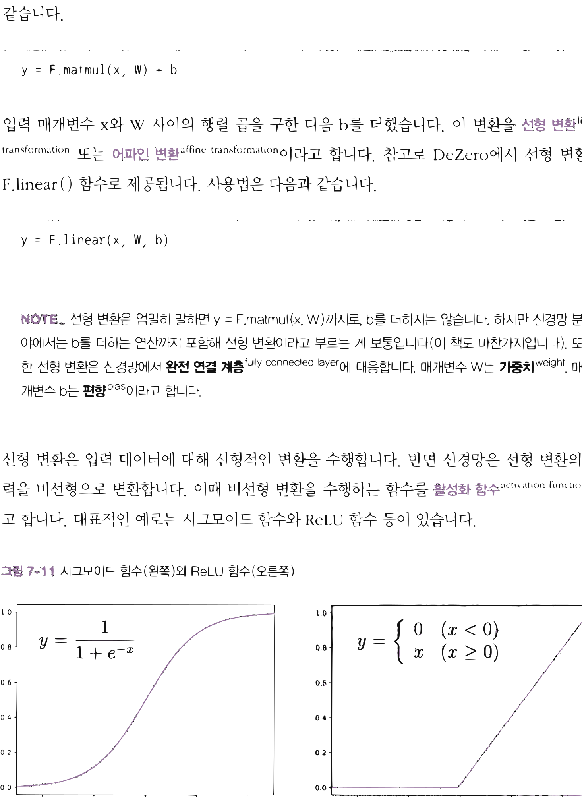
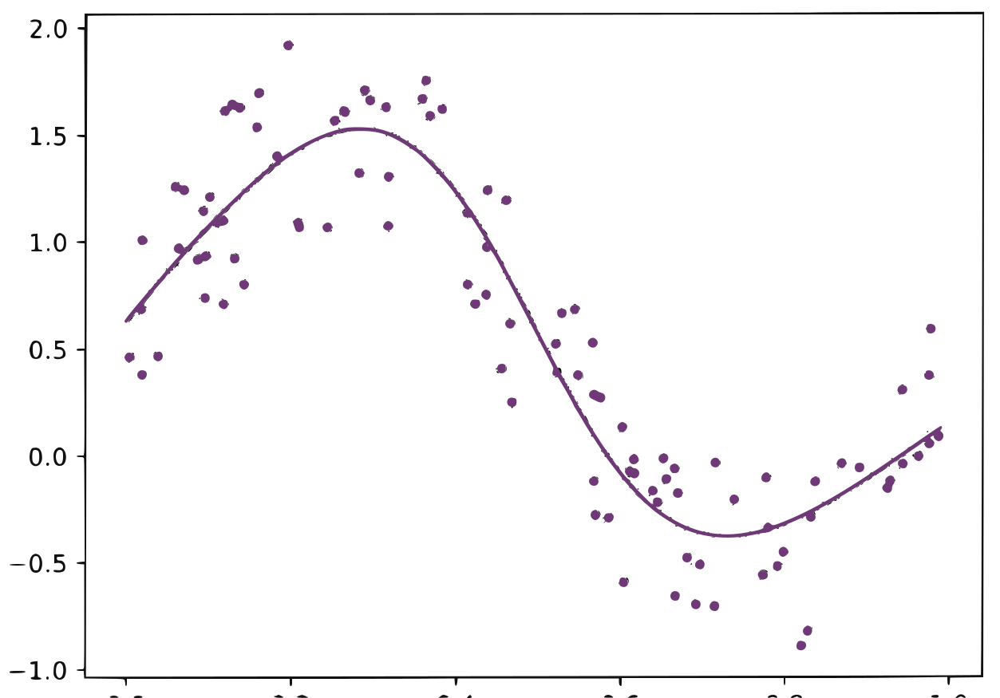

11.3 신경망
그림 11-3 입력층, 은닉층, 출력층으로 이루어진 마법 전구 발판을 밟아나가며 ReLU 활성화 함수의 특성을 필기하는 도로시와 지니

단순한 직선 예측을 뛰어넘어 복잡한 비선형 관계를 학습해 내는 다층 인공신경망(Artificial Neural Network)을 공부합니다. 선형 변환 노드들과 활성화 함수(Activation Function, 예: ReLU)를 결합하여 표현력을 무한히 극대화하는 멀티레이어 신경망의 은밀한 작동 원리를 지니의 마법 전구 발판 징검다리 비유를 통해 확실하게 소화해봅시다!
앞에서 DeZero를 사용하여 선형 회귀를 구현하고 올바르게 동작함을 확인했습니다. 선형 회귀를 구현할 수 있다면 이를 신경망으로 확장하는 일은 간단합니다. 이번에는 7.2절의 코드를 수정하여 DeZero를 이용한 신경망을 구현하겠습니다.
11.3.1 비선형 데이터셋
앞에서는 선형으로 정렬된 데이터셋을 사용했습니다. 이번에는 다음 코드를 실행하여 조금 더 복잡한 데이터셋을 만들겠습니다.
import numpy as np
np.random.seed(0)
x = np.random.rand(100, 1)
y = np.sin(2 * np.pi * x) + np.random.rand(100, 1)
데이터 생성에 sin() 함수를 사용했습니다. [그림 11-10]은 이렇게 만든 (x, y) 점들을 2차원 좌표계에 나타낸 모습입니다.
그림 11-10 이번 절에서 사용할 데이터셋
그림에서 볼 수 있듯이 x와 y는 선형 관계가 아닙니다. 이러한 비선형 데이터셋은 당연히 선형 회귀로는 대응할 수 없습니다. 신경망이 등장할 시간입니다.
11.3.2 선형 변환과 활성화 함수
앞에서는 간단한 데이터셋을 대상으로 선형 회귀를 구현했습니다. 선형 회귀에서 수행한 계산
은 (손실 함수를 제외하면) ‘행렬 곱’과 ‘덧셈’뿐이었습니다. 해당 부분 코드를 발췌하면 다음과 같습니다.
y = F.matmul(x, W) + b
입력 매개변수 x와 W 사이의 행렬 곱을 구한 다음 b를 더했습니다. 이 변환을 선형 변환linear transformation 또는 어파인 변환affine transformation이라고 합니다. 참고로 DeZero에서 선형 변환은 F.linear() 함수로 제공됩니다. 사용법은 다음과 같습니다.
y = F.linear(x, W, b)
[!NOTE] 선형 변환은 엄밀히 말하면
y = F.matmul(x, W)까지로, b를 더하지는 않습니다. 하지만 신경망 분야에서는 b를 더하는 연산까지 포함해 선형 변환이라고 부르는 게 보통입니다(이 책도 마찬가지입니다). 또한 선형 변환은 신경망에서 완전 연결 계층fully connected layer에 대응합니다. 매개변수 W는 가중치weight, 매개변수 b는 편향bias이라고 합니다.
선형 변환은 입력 데이터에 대해 선형적인 변환을 수행합니다. 반면 신경망은 선형 변환의 출력을 비선형으로 변환합니다. 이때 비선형 변환을 수행하는 함수를 활성화 함수activation function라고 합니다. 대표적인 예로는 시그모이드 함수와 ReLU 함수 등이 있습니다.
그림 11-11 시그모이드 함수(왼쪽)와 ReLU 함수(오른쪽)

$y = \frac{1}{1 + e^{-x}}$ $y = \begin{cases} 0 & (x < 0) \ x & (x \ge 0) \end{cases}$[그림 11-11]에서 볼 수 있듯이 시그모이드 함수와 ReLU 함수는 비선형 함수, 즉 결과가 ‘직선’이 아닌 함수입니다. 신경망에서는 이 그림과 같은 비선형 변환이 텐서의 원소마다 적용됩니다. DeZero는 시그모이드 함수를 F.sigmoid() 함수로, ReLU 함수를 F.relu() 함수로 제공합니다.
11.3.3 신경망 구현
일반적인 신경망은 ‘선형 변환’과 ‘활성화 함수’를 번갈아 사용합니다. 예를 들어 2층 신경망은 다음과 같이 구현할 수 있습니다(매개변수 생성 코드는 생략).
W1, b1 = Variable(...), Variable(...)
W2, b2 = Variable(...), Variable(...)
def predict(x):
y = F.linear(x, W1, b1) # 선형 변환
y = F.sigmoid(y) # 활성화 함수(시그모이드 함수 사용)
y = F.linear(y, W2, b2) # 선형 변환
return y
이와 같이 ‘선형 변환’과 ‘활성화 함수’를 순서대로 적용합니다. 이것이 바로 신경망 추론predict을 위한 코드입니다. 물론 추론을 제대로 하려면 학습train이 선행되어야 합니다. 신경망 학습에서는 추론 처리 후에 손실 함수를 추가합니다. 그리고 그 손실 함수의 출력을 최소화하는 매개변수를 찾습니다.
그럼 이제 실제 데이터셋을 사용하여 신경망을 학습시키겠습니다.
import numpy as np
from dezero import Variable
import dezero.functions as F
# 데이터셋
np.random.seed(0)
x = np.random.rand(100, 1)
y = np.sin(2 * np.pi * x) + np.random.rand(100, 1)
# 매개변수 초기화
I, H, O = 1, 10, 1 # I=입력층 차원 수, H=은닉층 차원 수, O=출력층 차원 수
W1 = Variable(0.01 * np.random.randn(I, H)) # 첫 번째 층의 가중치
b1 = Variable(np.zeros(H)) # 첫 번째 층의 편향
W2 = Variable(0.01 * np.random.randn(H, O)) # 두 번째 층의 가중치
b2 = Variable(np.zeros(O)) # 두 번째 층의 편향
# 신경망 추론
def predict(x):
y = F.linear(x, W1, b1)
y = F.sigmoid(y)
y = F.linear(y, W2, b2)
return y
lr = 0.2
iters = 10000
# 신경망 학습(매개변수 갱신)
for i in range(iters):
y_pred = predict(x)
loss = F.mean_squared_error(y, y_pred)
W1.cleargrad()
b1.cleargrad()
W2.cleargrad()
b2.cleargrad()
loss.backward()
W1.data -= lr * W1.grad.data
b1.data -= lr * b1.grad.data
W2.data -= lr * W2.grad.data
b2.data -= lr * b2.grad.data
if i % 1000 == 0: # 1000회마다 출력
print(loss.data)
출력 결과
0.8165178492839196
0.24990280802148895
...
0.07618764131185574
먼저 ❶에서 매개변수를 초기화합니다. I(=1)은 입력층input layer의 차원 수, H(=10)는 은닉층hidden layer(중간층)의 차원 수, O(=1)는 출력층output layer의 차원 수에 해당합니다. 이때 I와 O의 값은 1인데, 이번 문제 설정에서 자동으로 결정된 값입니다(입력 데이터와 출력 데이터 모두 1차원). H는 하이퍼파라미터입니다. 1 이상의 임의의 정수로 설정할 수 있습니다. 편향은 0 벡터로 초기화하고(np.zeros(...)), 가중치는 작은 무작위 값으로 초기화합니다(0.01 * np.random.randn(...)).
[!NOTE] 신경망은 가중치 초깃값을 무작위로 설정하는 게 좋습니다. 그 이유는 『밑바닥부터 시작하는 딥러닝』 1권의 ‘6.2.1 초깃값을 0으로 하면?’을 참고하기 바랍니다.
❷는 신경망 추론을 진행하는 함수이고 ❸에서 학습을 진행하면서 매개변수를 갱신합니다. 특히 ❸은 매개변수가 늘어났다는 점을 제외하면 앞 절의 코드와 똑같습니다.
이 코드를 실행하면 신경망이 학습하기 시작합니다. 그리고 학습을 끝마친 신경망은 [그림 11-12]의 곡선을 예측해냅니다.
그림 11-12 학습이 끝난 신경망으로 예측한 곡선

그림과 같이 sin 함수의 곡선을 잘 표현하고 있습니다. 이처럼 활성화 함수와 선형 변환을 반복하니 비선형 관계도 올바르게 학습할 수 있었습니다. 이것이 바로 신경망입니다.
다음 절에서는 방금 구현한 코드를 더 쉽게 작성하도록 도와주는 DeZero 모듈들을 소개하겠습니다. 첫 번째로 ‘계층’과 ‘모델’을 알아보죠.
11.3.4 계층과 모델
DeZero는 신경망을 쉽게 구현할 수 있도록 편리한 클래스들을 제공합니다. 먼저 dezero.layers 패키지에 있는 ‘계층’에 대해 알아보겠습니다. 계층 클래스는 매개변수 관리, 초기화 등의 기능을 제공합니다. 이번 절에서는 그중 선형 변환을 수행하는 Linear 클래스를 사용해보겠습니다. Linear 클래스는 다음과 같은 매개변수를 받아 초기화됩니다.
Linear(out_size, nobias=False, dtype=np.float32, in_size=None)
out_size는 출력 크기(출력 데이터의 차원 수), nobias는 편향 사용 여부, dtype은 입력 데이터 유형, in_size는 입력 크기(입력 데이터의 차원 수)입니다.
[!NOTE] Linear 클래스 내부에서는 선형 변환에 사용되는 가중치와 편향을 초기화하여 실제 선형 변환 계산에 사용합니다. 이 가중치와 편향은 Linear 클래스 초기화 시 전달되는
in_size와out_size를 기반으로 생성되죠.in_size가 None이면 입력 데이터 크기는 데이터를 실제로 흘려보낼 때 정해집니다. 가중치와 편향도 이 시점에 자동으로 초기화됩니다.
그럼 Linear 계층을 사용하는 코드를 보겠습니다.
import numpy as np
import dezero.layers as L
linear = L.Linear(10) # 출력 크기만 지정하여 Linear 계층 생성
batch_size, input_size = 100, 5
x = np.random.randn(batch_size, input_size)
y = linear(x) # 입력 데이터 x에 대해 선형 변환 수행
print('y shape:', y.shape)
print('params shape:', linear.W.shape, linear.b.shape)
for param in linear.params(): # 매개변수들에 접근
print(param.name, param.shape)
출력 결과
y shape: (100, 10)
params shape: (5, 10) (10,)
W (5, 10)
b (10,)
이와 같이 linear = L.Linear(10)으로 생성하면 y = linear(x) 형태로 선형 변환을 계산할 수 있습니다. 가중치와 편향은 linear 인스턴스 안에 담겨 있으며, 필요하면 linear.W와 linear.b로 가져올 수 있습니다. linear.params() 메서드로는 모든 매개변수를 가져올 수 있습니다.
이처럼 DeZero에서는 계층들을 마치 ‘레고 블록’처럼 조합하여 신경망을 구축할 수 있습니다.
또한 다음과 같이 신경망을 클래스 하나로 정의할 수도 있습니다(파이토치에도 도입된 방식입니다).
from dezero import Model
import dezero.layers as L
import dezero.functions as F
class TwoLayerNet(Model):
def __init__(self, hidden_size, out_size):
super().__init__()
self.l1 = L.Linear(hidden_size)
self.l2 = L.Linear(out_size)
def forward(self, x):
y = F.relu(self.l1(x))
y = self.l2(y)
return y
이와 같이 Model 클래스를 상속받아 모델을 구현합니다. 초기화 시에는 필요한 계층을 생성하고, 실제 처리(신경망 순전파)는 forward() 메서드에 작성합니다. Model 클래스를 상속하면 모델이 가지고 있는 모든 매개변수를 손쉽게 관리할 수 있습니다. 예를 들어 다음과 같이 사용할 수 있습니다.
model = TwoLayerNet(10, 1)
# 모든 매개변수에 접근
for param in model.params():
print(param)
# 모든 매개변수의 기울기 초기화
model.cleargrads()
이와 같이 model.params()로 모든 매개변수에 순서대로 접근할 수 있습니다. 모든 매개변수의 기울기를 한꺼번에 초기화하는 model.cleargrads() 메서드도 준비되어 있습니다.
이쯤에서 sin 함수의 비선형 데이터를 이번에는 dezero.Model과 dezero.layers를 사용하여 학습해봅시다.
import numpy as np
from dezero import Model
import dezero.layers as L
import dezero.functions as F
# 데이터셋 생성
np.random.seed(0)
x = np.random.rand(100, 1)
y = np.sin(2 * np.pi * x) + np.random.rand(100, 1)
lr = 0.2
iters = 10000
class TwoLayerNet(Model): # 2층 신경망
def __init__(self, hidden_size, out_size):
super().__init__()
self.l1 = L.Linear(hidden_size)
self.l2 = L.Linear(out_size)
def forward(self, x):
y = F.sigmoid(self.l1(x))
y = self.l2(y)
return y
model = TwoLayerNet(10, 1) # 신경망 모델 생성
for i in range(iters):
y_pred = model.forward(x) # 또는 y_pred = model(x)
loss = F.mean_squared_error(y, y_pred)
model.cleargrads()
loss.backward()
for p in model.params():
p.data -= lr * p.grad.data
if i % 1000 == 0:
print(loss)
결과는 지난번과 같습니다. 다만 이번에는 신경망이 하나의 클래스로 구현되어 매개변수를 갱신하고 기울기를 초기화하는 코드가 깔끔하게 정리되었습니다.
11.3.5 옵티마이저(최적화 기법)
마지막으로 모델의 매개변수를 갱신하는 클래스인 옵티마이저를 소개합니다. 앞서 구현한 코드에 옵티마이저를 적용하면 다음과 같이 됩니다.
import numpy as np
from dezero import Model
from dezero import optimizers # ❶ 옵티마이저들이 들어 있는 패키지 임포트
import dezero.layers as L
import dezero.functions as F
# 데이터셋 생성
np.random.seed(0)
x = np.random.rand(100, 1)
y = np.sin(2 * np.pi * x) + np.random.rand(100, 1)
lr = 0.2
iters = 10000
class TwoLayerNet(Model):
def __init__(self, hidden_size, out_size):
super().__init__()
self.l1 = L.Linear(hidden_size)
self.l2 = L.Linear(out_size)
def forward(self, x):
y = F.sigmoid(self.l1(x))
y = self.l2(y)
return y
model = TwoLayerNet(10, 1)
optimizer = optimizers.SGD(lr) # ❷ 옵티마이저 생성
optimizer.setup(model) # ❸ 최적화할 모델을 옵티마이저에 등록
for i in range(iters):
y_pred = model(x)
loss = F.mean_squared_error(y, y_pred)
model.cleargrads()
loss.backward()
optimizer.update() # ❹ 옵티마이저로 매개변수 갱신
if i % 1000 == 0:
print(loss)
이전 코드와의 차이점만 설명하겠습니다. ❶ 먼저 optimizers 패키지를 가져옵니다. 이 패키지에는 다양한 옵티마이저가 담겨 있습니다. ❷ 그런 다음 옵티마이저 중 하나인 SGD를 생성합니다. SGD는 ‘확률적 경사 하강법’이라는 최적화 기법을 구현한 옵티마이저입니다. SGD는 지금까지 해왔던 것처럼 매개변수를 기울기 방향으로 lr만큼 갱신합니다.
[!NOTE] 확률적 경사 하강법stochastic gradient descent에서 말하는 ‘확률적stochastic‘이란 대상 데이터 중에서 무작위(확률적)로 데이터를 선택한다는 뜻입니다. 이렇게 선택된 데이터에 경사 하강법을 수행하는 기법이 바로 확률적 경사 하강법이죠. 딥러닝에서 매우 흔하게 쓰이는 최적화 기법입니다.
❸ 바로 이어서 옵티마이저에 모델을 등록합니다. 여기까지 마치면 옵티마이저에 매개변수를 갱신하도록 시킬 수 있습니다. ❹ 매개변수 갱신은 optimizer.update()를 (매번) 호출하여 이루어집니다.
기울기를 이용한 최적화에는 다양한 기법이 있습니다. 대표적으로 Momentum, AdaGrad[6], AdaDelta[7], Adam[8] 등이 있죠. dezero.optimizers 패키지에도 이러한 기법들이 구현되어 있어서 쉽게 원하는 기법으로 변경할 수 있습니다. 예를 들어, 지금 코드에서 Adam 기법을 사용하고 싶다면 다음과처럼 한 줄만 바꿔주면 됩니다.
# optimizer = optimizers.SGD(lr)
optimizer = optimizers.Adam(lr)
이렇게 옵티마이저를 사용하면 최적화 기법을 쉽게 전환할 수 있습니다.
이상으로 DeZero와 신경망에 대한 설명을 마칩니다.